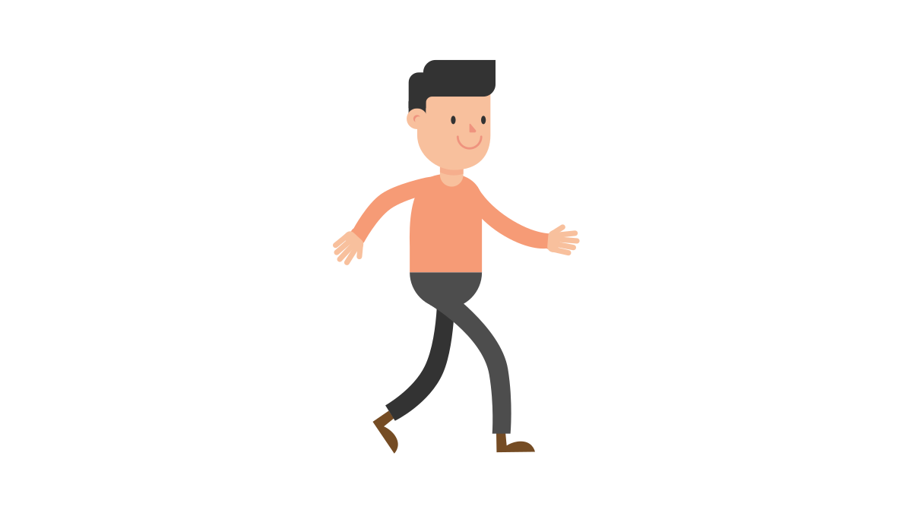

A Full-Stack Web Developer
I am a self-motivated, tenacious, and free-spirited 21 year old with a dedication towards managing and creating beautiful, interactive, and dynamic websites that engages user interaction. I am currently enrolled in the full-stack web development course in Umuzi, hoping to come out as a professional web developer by the end of my journey with them.
My journey to becoming a coder started back in February of 2021
when, back when I wasn't sure what I wanted to do with my life, I
came across an advertisement on the radio about an academy called
WeThinkCode and how they were offering a course to students; for
free and with no prerequisites! So me, not knowing what career field
I wanted to go in, had every reason to go and try this course and
see how it goes.
While I didn't get into the academy, I did discover that this would
be a career path that I would 100% be content with pursuing in the
future, as it involved an aspect that I love to do, which is
creating. Having something that I can call my own and can be proud
of creating is what I strive for, as it serves as a kind of
validation for yourself that you are the mastermind behind this
thing.
So naturally, after this discovery, I enrolled for another coding career, and that's how I found myself in the position I'm in right now. Although I have a long journey ahead, I'm looking forward to seeing just where it will lead me in the future.
Visual Studio Code. It is the first editor that I learned and it is relatively beginner-friendly, so I have no reason to switch. With it, I have coded algorithms with javascript, as well as created this website with HTML and CSS. The Version Control System that I have learned is Git and Github so working and co-ordinating in teams is not a problem for me.
I am looking to learn PostgreSQL, React JS, and Node.js in the future as required to become a web developer, but right now I am in the beginner stages of my journey and I know I have a lot to learn so I will update this in the future from "Still To Learn: X Y Z" to "Proficient In: X Y Z" :)
This website right here! Again, I'm still in the beginner stages of
becoming a developer, so I don't have that much to show you :(
BUT! This section right here will 100% be updated in the future, so
stay tuned...
In the meantime,
why not
download my CV
and see what else I have to offer?
Even before my journey started with coding, the way computers work in the background to give you the interface that you interact with has always fascinated me and I'm continuing to learn more about different systems and how they work. Along these comes my understanding of applications such as Excel, Word, PowerPoint, and others. Creating something I can call my own is the feeling I strive for, and that is why creating and perfecting code is my passion.
One of the career fields that I was previously interested in was sound engineering, but mostly it was just me thinking that music was the whole of sound engineering, and later I realized that it was much more than that. So one thing I do is make a bunch of beats from the fresh ideas that come up in my head, although I realized that it is almost impossible to replicate what is in your head. The beats are very laid back and harmonic, just like the type of music I listen to. Even though these beats are objectively mediocre, I treasure them because to me they represent an idea I had that has not been mastered yet.
Email: jjeb2020@gmail.com
Contacts: 061 437 8557
GitHub Profile:
https://github.com/JodyBailey
Done scrolling?
Jump back to the top!